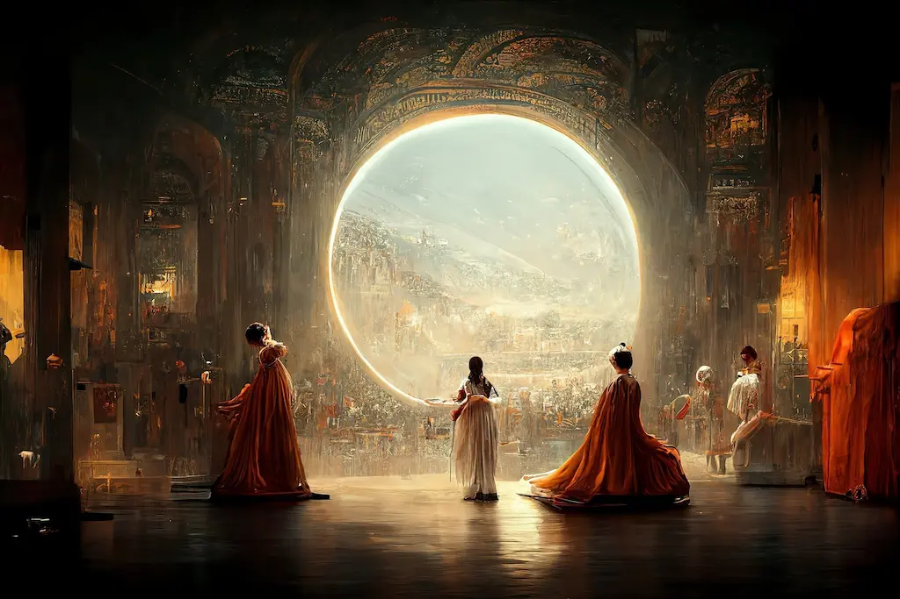

My interests
I have a lot of intrests, one of these being drawing. After programming drawing was one of the things. although I was too sceard of drawing without a step by step tutorial I eventualy became more and confident. My latest drawing being Testement from a game series called "Guilty Gear".

AI
One thing that has interested me for years now is Artificial Intelligence (AI). I have always found it interesting how it could be used to help in feilds such as medicen. Now with OpenAI bringing AI into the mainstream I am excited to see how this technology develops.
Events
My favrout pass-time has to be playing fighting games as I love the competative aspect and have made many close friends through them. I love the sence of comunity they bring so I decided to run a tourniment for a fighting game called "Super Smash Bros. Ultimate". I organised almost the entire even by myself and although it was very dificult the final resault of seeing how happy everyone who attended was made the whole experence very worth it, so much so that I am already planning another one!